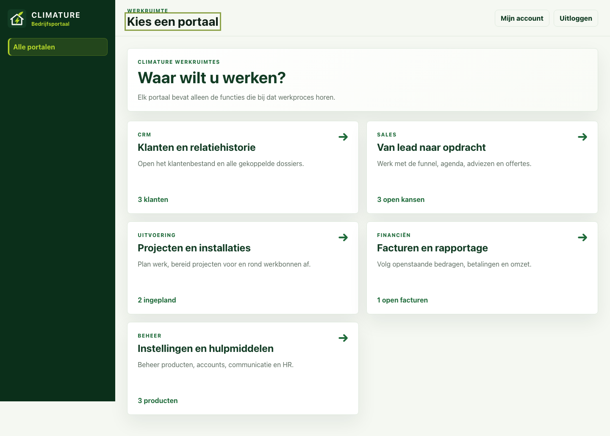
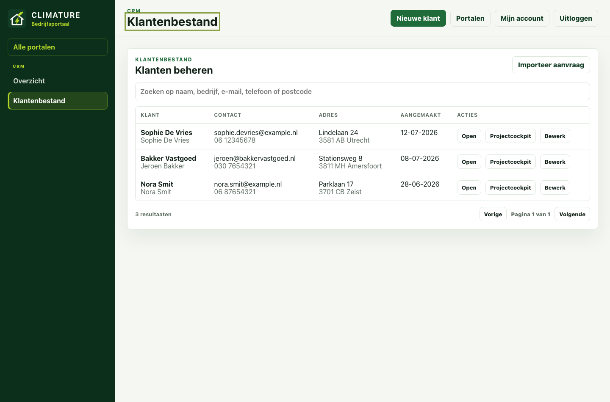
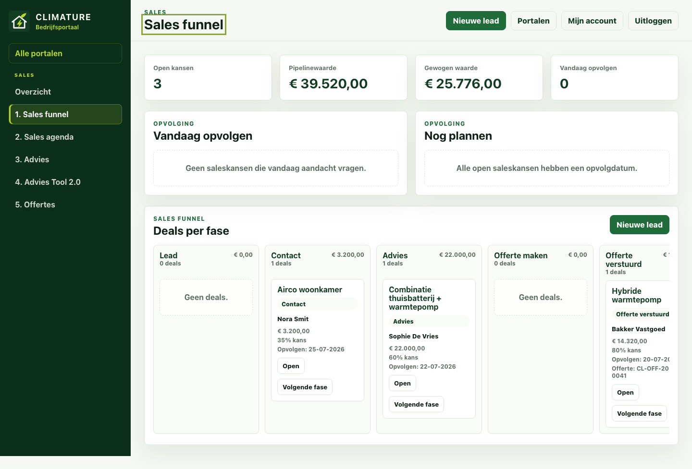
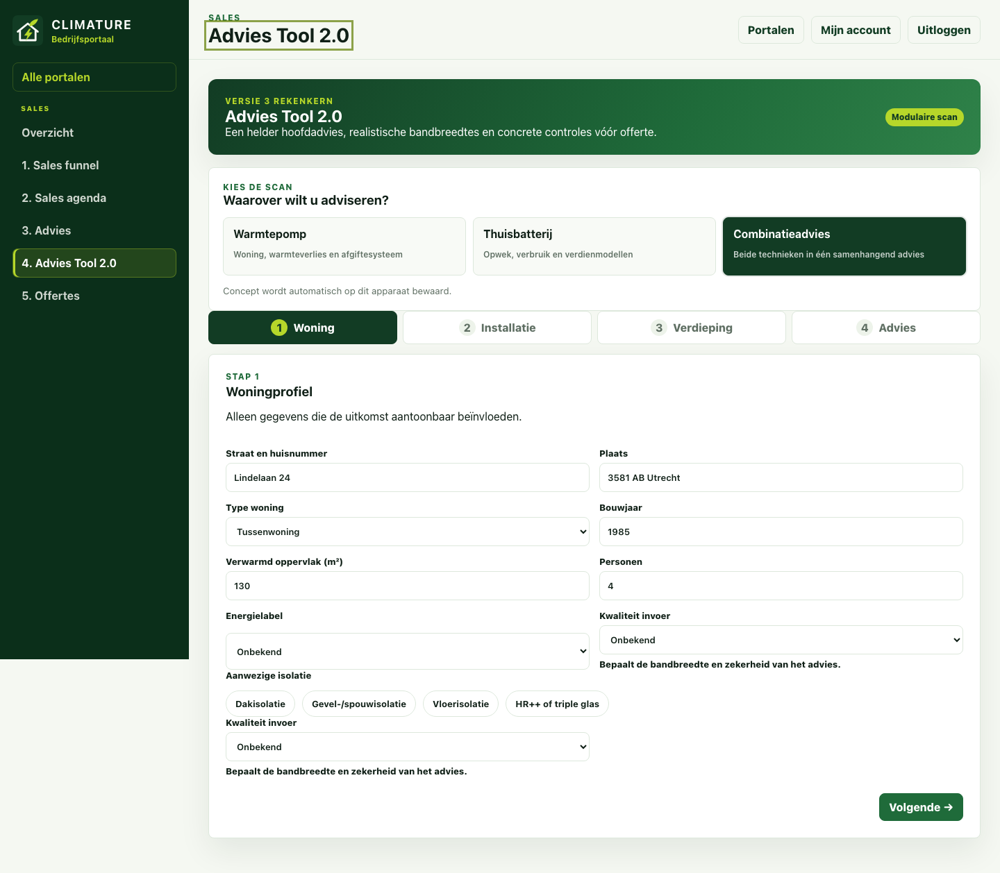
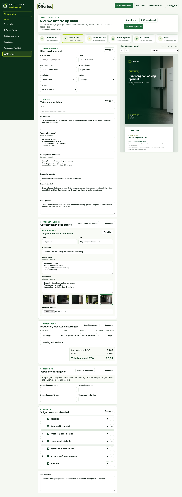
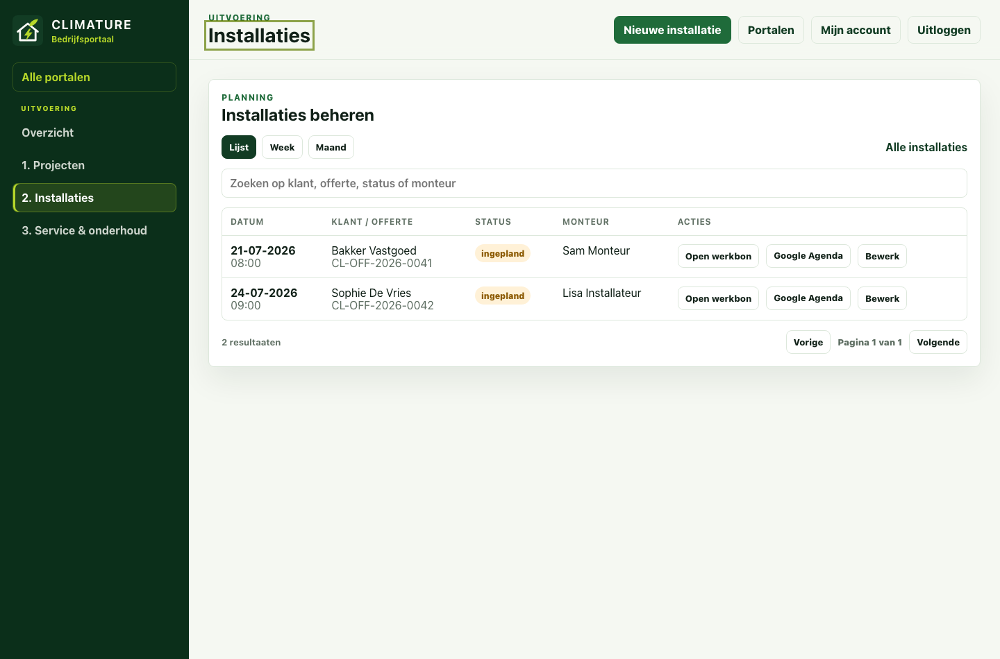
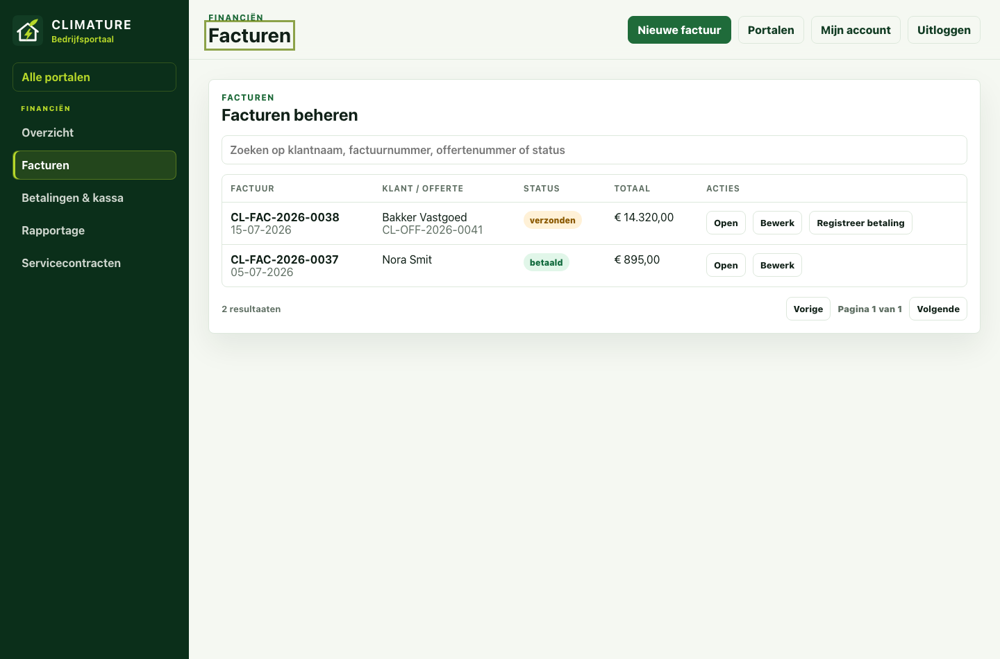

Bedrijfsportaal · gebruikershandleiding
Van klantvraag tot afgerond project
Een praktische gids voor CRM, sales, uitvoering, service, financiën, beheer en het werknemersportaal.
Bedrijfsportaal · gebruikershandleiding
Een praktische gids voor CRM, sales, uitvoering, service, financiën, beheer en het werknemersportaal.
De handleiding volgt het echte werkproces. U hoeft dus niet alles van voor naar achter te lezen: begin bij uw taak of portaal.
Gebruik de inhoudsopgave of de snelle werklijsten achterin.
Knopnamen in deze gids komen overeen met de applicatie.
Een opgeslagen record en juiste status vormen het overdrachtsmoment.
De schermafbeeldingen bevatten fictieve namen en bedragen. In uw omgeving ziet u de actuele gegevens van Climature. Velden en knoppen kunnen afhankelijk van rechten of configuratie iets afwijken.
Functionele basis: applicatieversie 2.1.0. Handleiding samengesteld op 19 juli 2026.
Gebruik de beveiligde link die u van de beheerder heeft ontvangen.
Gebruik uitsluitend uw persoonlijke account; deel geen wachtwoorden.
Na succesvolle aanmelding opent de pagina Waar wilt u werken?.
Open CRM, Sales, Uitvoering, Financiën of Beheer. Alleen toegestane portalen worden getoond.

Het actieve portaal bepaalt het linkermenu. De rol bepaalt vervolgens welke gegevens u mag bekijken of wijzigen.
| Rol / portaal | Belangrijkste functies | Typisch gebruik |
|---|---|---|
| CRM | Klantenbestand, contactgegevens, klantdocumenten | Relaties vastleggen en dossiers actueel houden |
| Sales | Funnel, agenda, advies, offertes | Van eerste lead naar geaccepteerde opdracht |
| Uitvoering | Projectcockpits, installaties, service | Werk voorbereiden, plannen en opleveren |
| Installateur | Toegewezen klanten/projecten, werk- en servicebonnen | Operationele uitvoering; beperktere beheermogelijkheden |
| Financiën | Facturen, betalingen, kassa, rapportage | Geldstromen verwerken en controleren |
| Beheerder | Alle portalen, producten, accounts, instellingen en HR | Configuratie, toegang en stamgegevens beheren |
Navigeer binnen de gekozen werkruimte. De actieve pagina is groen gemarkeerd.
Bevat contextuele hoofdacties, zoals Nieuwe klant of Nieuwe factuur.
Open een record voor gekoppelde documenten, statussen en vervolgacties.
Gebruik Verwijderen alleen wanneer een record echt onjuist is. Wijzig voor normale voortgang liever de status. Sommige verwijderacties zijn alleen voor beheerders beschikbaar.
Van aanvraag tot nazorg
De kwaliteit van de volgende stap begint bij volledig opgeslagen informatie in de vorige stap.
Kies bestaande klant, offerte of saleskans; maak geen losse kopieën.
Collega’s sturen hun werkvoorraad op actuele statussen.
Controleer de bevestigingsmelding voordat u een vervolgactie start.

De knop staat bovenaan bij voldoende CRM-rechten.
Naam of bedrijfsnaam, e-mail, telefoon en adres.
Open daarna het klantdetail voor vervolgwerk.
Zoek op naam, bedrijf, e-mail, telefoon of postcode.
Bekijk dossier, gekoppelde documenten en planning.
Corrigeer brongegevens; pas afgeleide documenten apart aan.
Gebruikers met CRM-beheerrechten kunnen via Importeer aanvraag de tekst van een aanvraag-e-mail laten uitlezen. Controleer de herkende naam, contactgegevens, adres en aanvraagtekst altijd vóór u deze in het klantenbestand zet.
Vanuit één dossier kunt u vervolgwerk starten zonder opnieuw een klant te kiezen.
Ga naar Documenten en planning.
Gebruik een herkenbare titel en documentsoort.
Controleer daarna met Open of Download.
Toegestane bestandsgrootte en typen worden door het portaal bewaakt.
| Gegeven | Waarom nodig | Controle |
|---|---|---|
| Naam / bedrijf | Documentaanhef en zoeken | Juiste schrijfwijze |
| E-mail en telefoon | Offerte, bevestiging en planning | Geen tikfouten |
| Adres, postcode, plaats | Opname, project en werkbon | Installatielocatie klopt |
| Notities / aanvraag | Context voor sales en uitvoering | Alleen relevante informatie |

Vul een duidelijke titel in.
Of leg tijdelijk losse contactgegevens vast.
Deze vormen de gewogen pipelinewaarde.
Voeg opvolg- en verwachte sluitdatum toe.

De klassieke tool bevat aparte berekeningen voor warmtepomp en batterij. Advies Tool 2.0 gebruikt een modulaire scan met een gezamenlijke rekenkern, bandbreedtes en controlepunten.
Warmtepomp, thuisbatterij of combinatie.
Onder andere woning, label, isolatie en bekende kwaliteit.
Verbruik, afgiftesysteem, zonnepanelen, aansluiting en voorkeuren.
Budget, doel, timing en ontbrekende technische gegevens.
Bekijk hoofdadvies, scenario’s, zekerheid en actieplan.
Download een adviesdocument voor bespreking met de klant.
Borg de invoer en uitkomst in het klantdossier.
Neem geselecteerde componenten en voordelen over.
Zo zijn klant en context direct gekoppeld.
Combinatie, maatwerk, thuisbatterij, warmtepomp, cv-ketel of airco.
Nummer, datum, geldigheid, titel en huisstijl.
Omschrijving, aantal, eenheid, prijs excl. btw, tarief en component.
Intro, inbegrepen, voordelen, installatie, voorwaarden en paginavolgorde.
Loop elke A4-pagina langs en los waarschuwingen op.

Gebruik eventueel geaccepteerd/aanbetaling.
Neem gekoppelde klant en offerte over.
Controleer taken, materiaal en bezetting.
Gebruik de offerte als bron om dubbele invoer te vermijden.
| Actie | Resultaat | Wanneer |
|---|---|---|
| Download PDF / Print | Klantdocument genereren | Na visuele controle |
| Status wijzigen | Pipeline en werkvoorraad actualiseren | Direct na gebeurtenis |
| Installatie plannen | Opdracht in uitvoering zetten | Na akkoord en planning |
| Factuur maken | Conceptfactuur met offertegegevens | Volgens betaalafspraak |

Start bij voorkeur vanuit geaccepteerde offerte.
Controleer werksoort en locatie.
Voeg duur, status en monteur toe.
Los waarschuwingen op vóór toewijzing.
Open de werkbon of voeg toe aan Google Agenda.
Blokkade of achterstallige voorbereiding.
Risico richting installatiedatum.
Vereisten zijn op orde.
Agendaweergave: gebruik week voor dagelijkse planning, maand voor capaciteit en lijst voor gericht zoeken.
Kies daarna Werkbon opslaan en desgewenst Print / PDF werkbon.
Controleer klant, datum, tijd en status.
Leg diagnose, werkzaamheden, materialen en meetwaarden vast.
Vul de klantnaam in en gebruik het handtekeningveld.
Upload relevante PDF-, JPG- of PNG-bestanden.
Maak zo nodig daarna een conceptfactuur.

Of start vanuit een offerte/servicebezoek.
Offertegegevens kunnen automatisch worden geladen.
Factuurdatum, vervaldatum en betaaltermijn.
Omschrijving, aantal, prijs excl. btw en btw-tarief.
Controleer PDF en betaalinstructies.
Markeer pas verzonden nadat het document daadwerkelijk is verzonden. Registreer een betaling vanuit een verzonden of verlopen factuur.
Controleer klant, factuurnummer, regels, btw, totaal, IBAN, betaalinstructie en vervaldatum. Download daarna de PDF of kies Print.
Selecteer een factuur of gebruik losse betaling.
Korting vereist een reden; fooi staat apart.
Volledig of gedeeltelijk; voeg later extra betaalmiddelen toe.
Bekijk betaald, terugbetaald en resterend bedrag.
Open het bonnummer vanuit de betaling.
Kies periode of datumbereik en controleer uitsplitsing per tarief.
Bekijk omzetreeks, factuurstatussen en topklanten.
Exporteer facturen of offertes voor verdere controle.
Een betaling hoort waar mogelijk bij een factuur, een factuur bij een offerte of servicebezoek en de offerte bij de klant. Die koppeling maakt controle en rapportage betrouwbaar.
Beheer naam, categorie, artikelnummer, eenheid, prijs excl. btw, btw-tarief en actieve status.
Maak klantberichten voor onder meer offerte, planning, herinnering en nazorg. Controleer altijd vóór kopiëren.
Open officieel Google-beheer en bewaar profiel- en beoordelingslink.
Adres, contact, KvK, btw, IBAN, betaaltermijn en standaardteksten.
Energieprijzen, marktwaarden, producten, subsidies en bronmetadata.
Gebruikers, rollen, actief/inactief en eventuele werknemerskoppeling.
Zoek bestaand product of kies Nieuw product.
Controleer prijsbasis en btw.
Nieuwe offertes gebruiken de gewijzigde gegevens.
Bestaande offerte- of factuurregels veranderen niet automatisch.
Het werknemersportaal staat los van CRM. Alleen beheerders met ingeschakelde HR-functie en aanvullende verificatie krijgen toegang.
Bij eerste gebruik stelt u multifactorauthenticatie in. Voor gevoelige handelingen kan opnieuw een authenticatorcode nodig zijn.
Vul personeelsnummer, naam, afdeling, functie, contact en startdatum in.
Voeg contract, kwalificaties en benodigde bewijsstukken toe.
Werk onboardingtaken af en wijs waar nodig verantwoordelijkheden toe.
Maak in hoofdbeheer een account met passende rol en werknemerskoppeling.
Bewijs en vervaldatum zijn op orde.
Plan verlenging vóór de waarschuwingsdatum.
Niet inplannen voor werk waarvoor dit vereist is.
Controleer gebruikersnaam, e-mail en rol.
Gebruik een actueel persoonlijk e-mailadres.
Gebruik een lang, uniek wachtwoord en bevestig zorgvuldig.
Log zo nodig opnieuw in.
Het portaal toont een verbindingsmelding en blokkeert schrijfacties. Wacht tot de verbinding is hersteld, controleer de actuele gegevens en voer de wijziging dan opnieuw uit.
Tik op ☰ en kies de gewenste pagina.
Brede tabellen kunnen horizontaal schuiven.
Loop vóór Opslaan alle velden nog eenmaal langs.
| Probleem | Waarschijnlijke oorzaak | Wat u doet |
|---|---|---|
| Ik zie een portaal of knop niet | Rol of beheerrecht ontbreekt | Controleer Mijn account; vraag beheerder om rolcontrole |
| Opslaan lukt niet | Verplicht veld, validatie of verbinding | Controleer gemarkeerde velden en verbindingsmelding |
| Klant staat dubbel | Niet gezocht vóór aanmaken | Stop vervolgwerk en laat beheerder dossiers beoordelen |
| PDF ziet er onjuist uit | Te veel tekst, ontbrekende gegevens of verkeerde pagina | Controleer live voorbeeld, waarschuwingen en paginakeuze |
| Offerte kan niet definitief worden gefactureerd | Er bestaat al een definitieve factuur | Open de gekoppelde facturen en kies juiste correctieroute |
| Monteur toont waarschuwing | Kwalificatie ontbreekt of verloopt | Controleer werknemersportaal en wijzig planning indien nodig |
| Wijzigingen lijken verdwenen | Formulier niet opgeslagen of sessie/verbindingsprobleem | Controleer bevestigingsmelding en open record opnieuw |
| HR-portaal vraagt code | Extra beveiliging is verplicht | Gebruik persoonlijke authenticator of herstelprocedure |
Is de online-status hersteld?
Werkt u in de juiste klant/offerte/factuur?
Past de actie bij uw rol?
Ga terug via het menu en open opnieuw.
Tot slot
Wie een stap afrondt, werkt de status en het dossier direct bij. Zo kan de volgende collega zonder zoekwerk door.